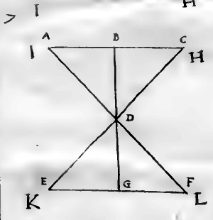

Proposition IV: Fourth Element (Crossed Lines & the Sign ✠)¶


Proposition IV · Problem IV · Element IV (Tab. 1, Fig. 7)
Let two straight lines :g:`AF` and :g:`EC` cross at :g:`D`, joined by opposing bases :g:`AC` and :g:`EF`, and let a third straight line :g:`BG` pass through :g:`D` meeting :g:`AC` at :g:`B` and :g:`EF` at :g:`G`. To establish the static equilibrium of weights at the four corners :g:`A`, :g:`C`, :g:`E`, :g:`F`.
Suspend four weights I at A, H at C, K at E, and L at F such that D balances both diagonal pairs (I with L along AF, and K with H along EC). Then D is the global center of gravity of all four weights. Regrouping along the bases AC and EF, the fulcrums B (of I and H) and G (of K and L) must lie collinear with D, yielding:
$$\overline{BD} : \overline{DG} = (K + L) : (I + H).$$
Scholium (Introduction of the Addition Symbol ``✠``): Here on p. 5 Ceva explicitly introduces his typographic addition symbol (obelus additionis): “We write ``A ✠ F``, that is, A plus F.” Because printer Ludovico Monza lacked a standard algebraic + sort (as noted in the p. 83 Errata note, folio 0100), he set the ornate Maltese/patonce cross ✠ throughout the treatise.